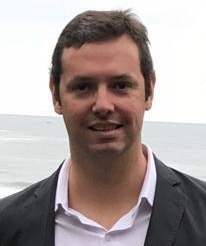

Organizadores

Marcelo Alves dos Santos


Pesquisador na Universidade de Bergamo, desenvolvendo pesquisa em controle preditivo e métodos baseados em otimização aplicados a sistemas robóticos. Atua no avanço de formulações com garantias formais de estabilidade e segurança, com foco na integração entre planejamento e controle e na implementação em tempo real.

Guilherme Vianna Raffo
Professor Associado da Universidade Federal de Minas Gerais, com atuação em controle não linear, controle robusto e controle preditivo aplicados à robótica e a sistemas cooperativos. Sua pesquisa abrange controle ótimo e métodos baseados em conjuntos aplicados ao controle e ao planejamento de sistemas sujeitos a restrições, com foco em robustez e no tratamento de incertezas.